For this course project, I created a website for a fictional event called “Dance Kvartirnik.” The original idea actually came from a friend of mine who is a dancer. I wanted to create something that felt more like a real project and not just a school assignment. I wanted to create something that I could modify as I learned more, and my friend can use my website to start doing events like that in Finland.
I created five pages: home, about, gallery, registration, and report. Before the course started, I had not even the slightest idea how you could make a working website. My favourite part of this project was the vinyl animation, with playable audio when you click it; I used SVG to draw it, CSS to make it rotate, and JavaScript to connect it to music. However, getting the audio to work was not as easy as I thought it would be. I spent quite some time trying to understand why the browser could not load the file, and with the browser console, I made it work, and I was very excited and very happy when it did work! If I had to choose what I would like to receive extra points for, it is definitely the record. I also enjoyed working on the visual design, especially the small details, colours and fonts. Sometimes I spent more time than I expected trying to make two elements look good together.
But the biggest challenge was making the website responsive. At first, everything looked fine on my laptop, but when I checked other screen sizes, some elements were suddenly in completely wrong places. The overlapping images on the home page caused me particular problems. I had to change their positioning several times and use CSS media queries to make the layout work on desktop, tablet, and mobile screens. It was probably the most frustrating part of the project, but also one of the most useful things I learned.
Some tasks, like creating the basic HTML structure and adding text, were quite straightforward. On the other hand, working with responsive images, positioning, and JavaScript required much more patience. I also realised that even a small design change can sometimes create problems somewhere else on the page.
During the course, I learned much more than just HTML and CSS. I started to understand how different parts of a website work and what is behind every website. I worked on this project for approximately three days a week over three weeks. If I continued developing it, I would improve some of the responsive layouts and add more interactive features. Overall, I am happy with the result, especially the colour scheme and the vinyl record. The website is not perfect, but I like that it has its own atmosphere and that I managed to turn my original idea into something that actually works, and hopefully one day I will be able to improve it.
Website Structure
All five pages are accessible from every page through the main navigation menu.

Specifications
Project overview
Dance Kvartirnik is a website for a small dance and live performance event. Its purpose is to introduce the event, provide information about upcoming performances and artists, show photos and videos from previous events, and allow visitors to register.
The target audience is people interested in dance, live music and small cultural events.
Website Structure
The website consists of five pages:
- Home - Introduction to Dance Kvartirnik.
- About - Event program, artists, schedule, date and location.
- Gallery - Photos and videos from previous events.
- Registration - Registration form with email notification to the organizer.
- Report - Website specifications and development reflection.
Design
The website uses a simple, minimal design with warm brown colors (#231512, #563527 and #895C39), whitesmoke and wheat text, and the Playfair Display font.
The same header, navigation and visual style are used throughout the website.
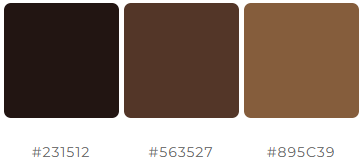
Technologies and responsiveness
The website is developed using HTML, CSS and JavaScript. It is designed for desktop computers, tablets and mobile phones.
CSS media queries adjust the layout for different screen sizes, and a hamburger menu replaces the main navigation on smaller screens.
Development process
The project started with planning the website structure and creating layouts and mockups. The design was planned to make information easy to find and registration simple for visitors.
Changes to the website content, such as text and images, require editing the code.
Mockups
Mockups for desktop
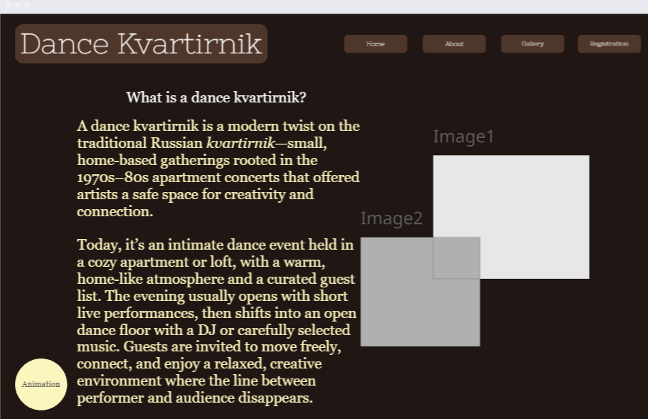
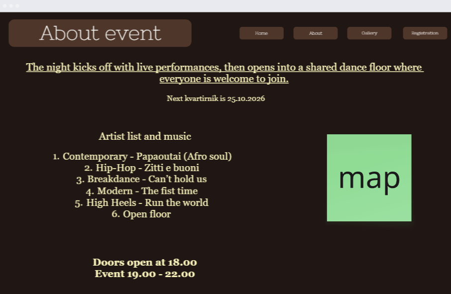
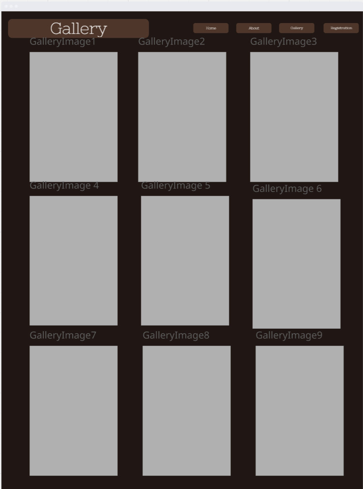
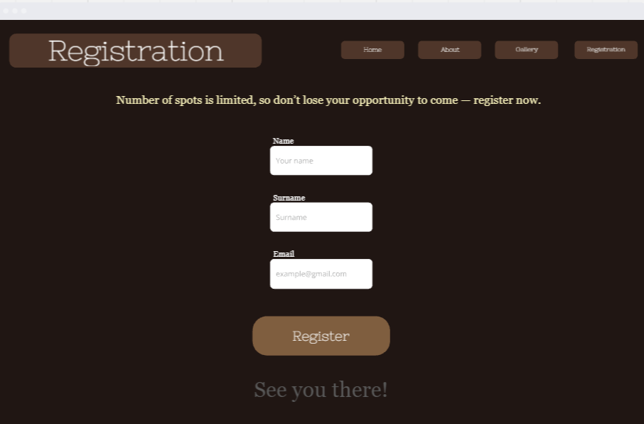
Mockups for tablet
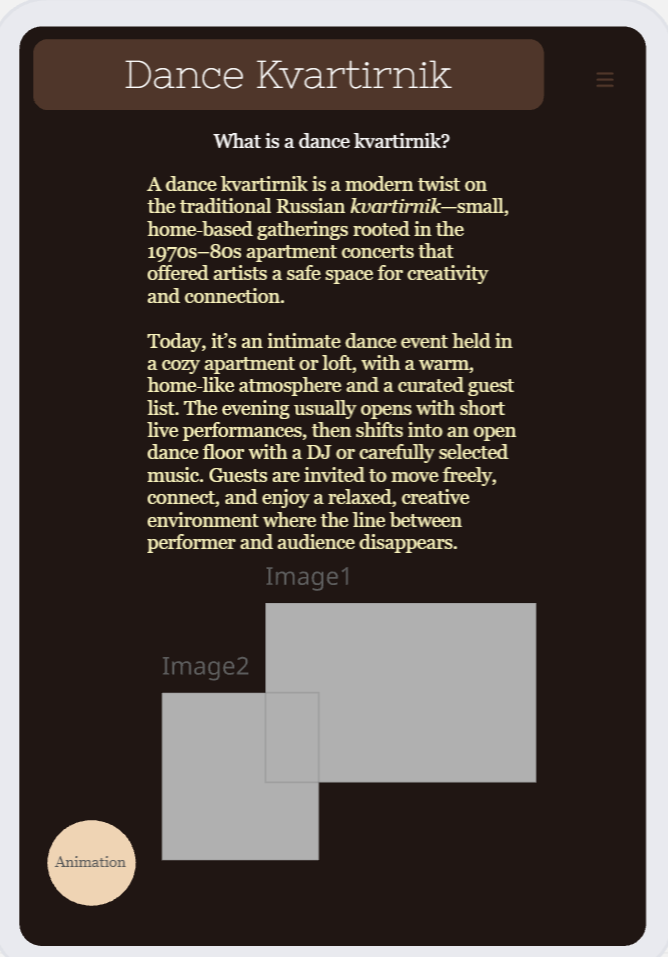
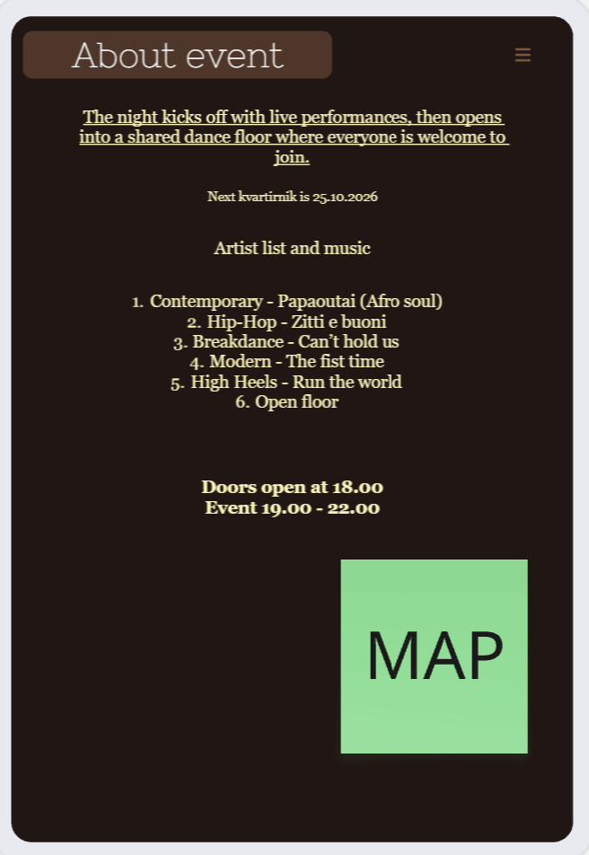
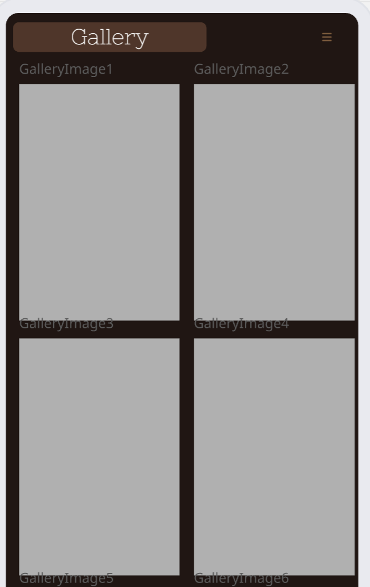
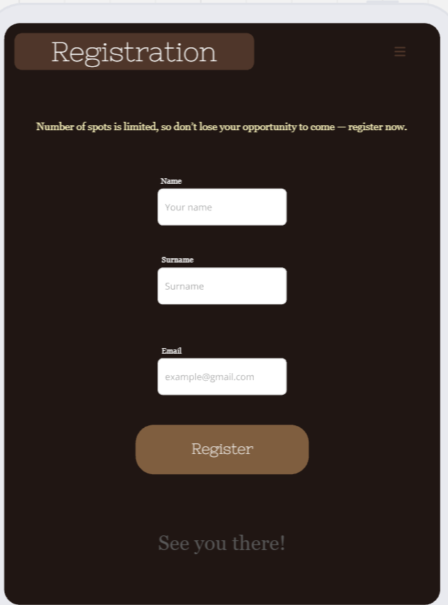
Mockups for mobile
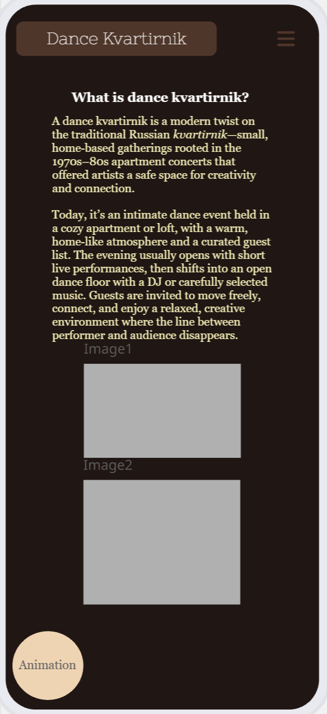
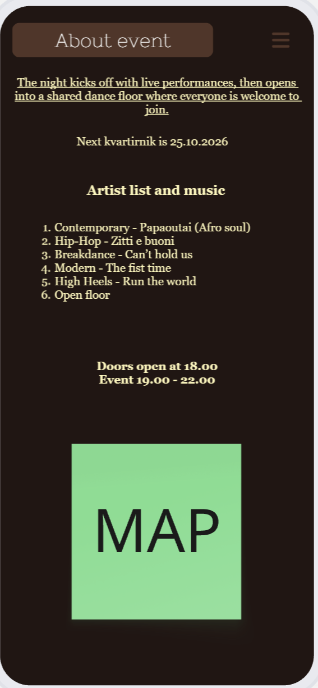
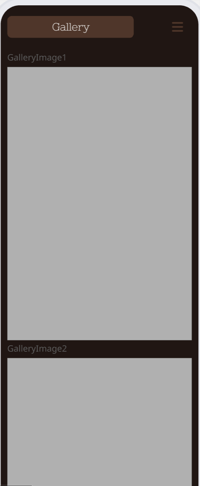
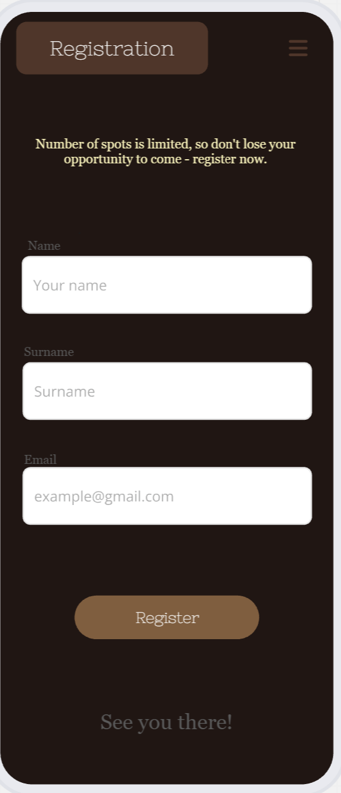